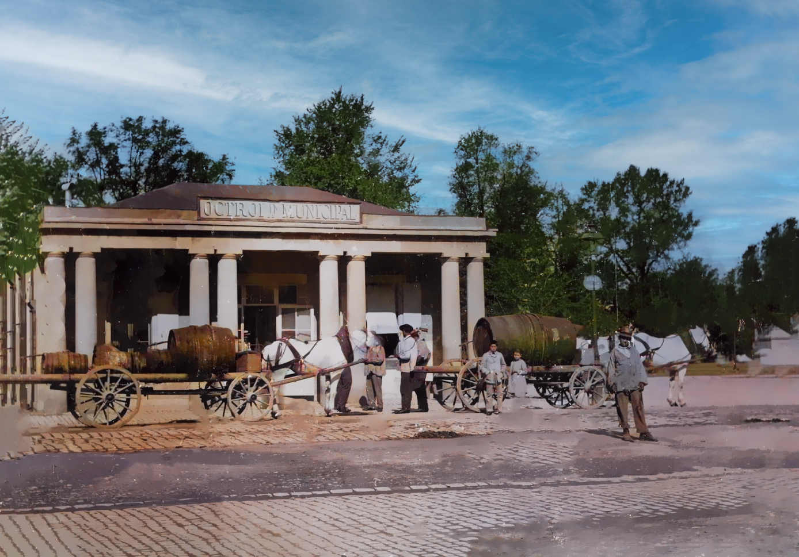

This is one of my Photoshop projects. This is a photo restoration that I did using multiple layers and adjustment tools.
The purpose of the project is to show off my photoshop skills by restoring an old photograph I found using wikipedia.
The tools I used were the Spot Healing Brush Tool, Healing Brush Tool, Neural Filters/Colorize, Hue/Saturation, and Curves.
